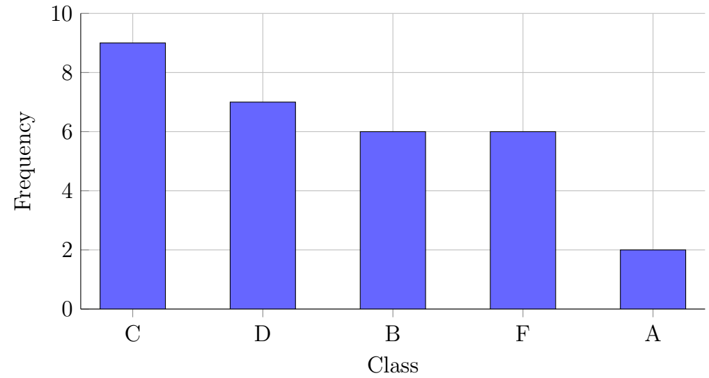
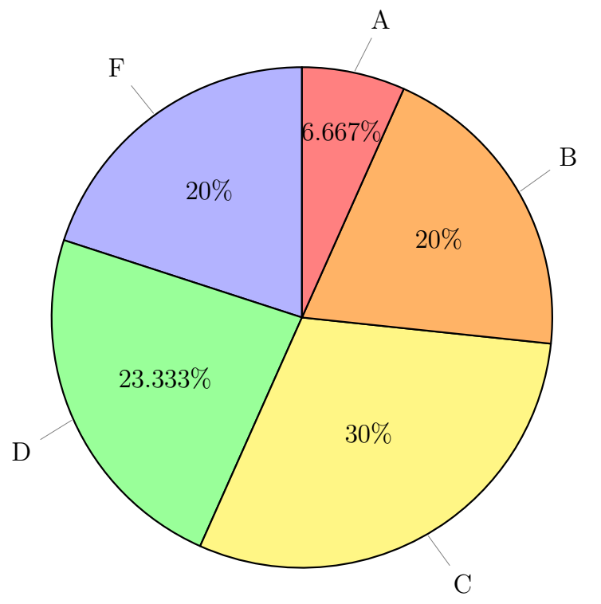
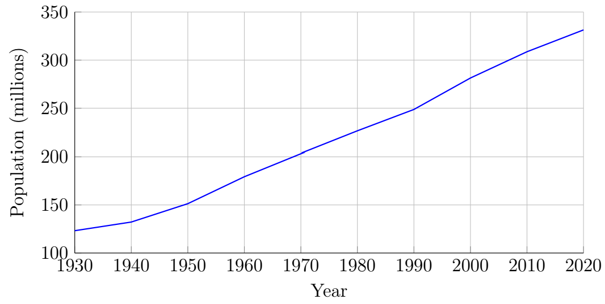

Chapter 4: Pictures of Data
Section 4.4: Additional Charts
Pareto Charts
Definition: Pareto Chart
A Pareto chart is a special type of bar chart in which the categories are arranged from the highest frequency to the lowest frequency, rather than in their natural order.
Using the grade data from earlier,
| Class | Freq |
|---|---|
| A | 2 |
| B | 6 |
| C | 9 |
| D | 7 |
| F | 6 |
| Total | 30 |
we can build the following:

The Pareto chart is named after the Italian economist Vilfredo Pareto, who observed an unequal distribution of wealth in Italy. The term Pareto Principle is now commonly used as a general description of situations in which a relatively small number of categories account for a relatively large proportion of an outcome. The percentages need not be exactly 80% and 20%.
For example, a quality-control Pareto chart may reveal that a small number of defect categories account for a large proportion of reported defects. The purpose of the chart is to identify categories that contribute substantially to the total, not to assume that an 80/20 relationship must exist.
A Pareto chart can help identify categories that account for a large proportion of an observed outcome and may therefore deserve further investigation.
Circle Graphs
Definition: Circle Graph
A circle graph, also called a pie chart, is a graph used to show how a whole is divided into parts. The entire circle represents 100% (or \(360^\circ\)), and each sector (slice) represents the proportion of the total for one category. The size of each sector is determined by its relative frequency or percentage.
Using the grade data from earlier,
| Class | Freq |
|---|---|
| A | 2 |
| B | 6 |
| C | 9 |
| D | 7 |
| F | 6 |
| Total | 30 |
we can build the following:

Time-Series Graphs
Definition: Time-Series Graph
A time-series graph is a type of line graph used to display how a variable changes over a period of time. The horizontal axis (x-axis) represents time intervals, such as years, months, days, or hours. The vertical axis (y-axis) represents the measured quantity or value being observed.
Individual data points are plotted at each time period and connected with line segments to show the pattern of change. A time-series graph helps identify:
- Trends: Long-term increases or decreases over time.
- Patterns: Repeated behaviors or cycles.
- Fluctuations: Short-term rises and falls.
- Periods of rapid change: Times when values increase or decrease quickly.
For example, a time-series graph of U.S. population over the last 100 years shows a general long-term trend, indicating that the population has steadily increased from one census period to the next.

Important features of a time-series graph include:
- Time is placed on the horizontal axis.
- The measured variable is placed on the vertical axis.
- Data points are connected in chronological order.
- The direction of the line indicates whether the measured variable is increasing or decreasing over time. The steepness of the line reflects the rate of change, provided the time intervals and vertical scale are interpreted consistently.
Time-series graphs are commonly used for population growth, stock prices, weather patterns, sales trends, economic indicators, and other measurements collected over time.